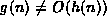
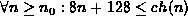
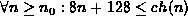
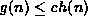
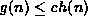

Data Structures and Algorithms
with Object-Oriented Design Patterns in C++
Data Structures and Algorithms
with Object-Oriented Design Patterns in C++Big oh notation characterizes the asymptotic behavior of a function by providing an upper bound on the rate at which the function grows as n gets large. Unfortunately, the notation does not tell us how close the actual behavior of the function is to the bound. I.e., the bound might be very close (tight) or it might be overly conservative (loose).
The following definition tells us what makes a bound tight, and how we can test to see whether a given asymptotic bound is the best one available.
Definition (Tightness) Consider a function f(n)=O(g(n)). If for every function h(n) such that f(n)=O(h(n)) it is also true that g(n)=O(h(n)), then we say that g(n) is a tight asymptotic bound on f(n).
For example, consider the function f(n)=8n+128.
In Section  ,
it was shown that
,
it was shown that  .
However, since f(n) is a polynomial in n,
Theorem tells us that f(n)=O(n).
Clearly O(n) is a tighter bound on the asymptotic behavior of f(n)
than is
.
However, since f(n) is a polynomial in n,
Theorem tells us that f(n)=O(n).
Clearly O(n) is a tighter bound on the asymptotic behavior of f(n)
than is  .
.
By Definition ,
in order to show that g(n)=n is a tight bound on f(n),
we need to show that for every function h(n)
such that f(n)=O(h(n)), it is also true that g(n)=O(h(n)).
We will show this result using proof by contradiction:
Assume that g(n) is not a tight bound for f(n)=8n+128.
Then there exists a function h(n)
such that f(n)=8n+128=O(h(n)),
but for which .
Since 8n+128=O(h(n)), by the definition of big oh there exist
positive constants c and  such that
.
such that
.
Clearly, for all  ,
,  .
Therefore, .
But then, by the definition of big oh,
we have the g(n)=O(h(n))--a contradiction!
Therefore, the bound f(n)=O(n) is a tight bound.
.
Therefore, .
But then, by the definition of big oh,
we have the g(n)=O(h(n))--a contradiction!
Therefore, the bound f(n)=O(n) is a tight bound.
 Copyright © 1997 by Bruno R. Preiss, P.Eng. All rights reserved.
Copyright © 1997 by Bruno R. Preiss, P.Eng. All rights reserved.